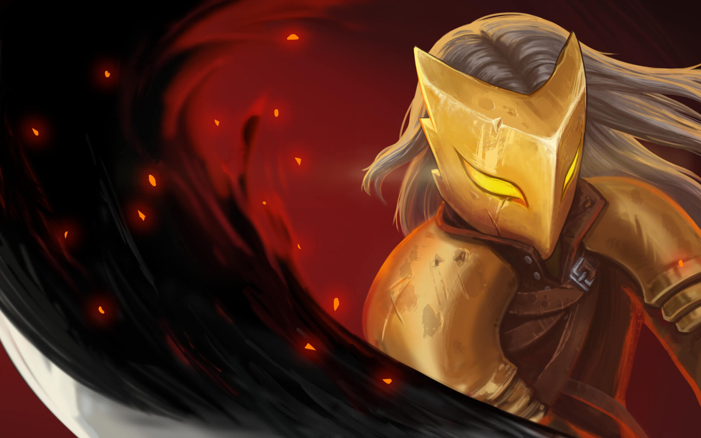
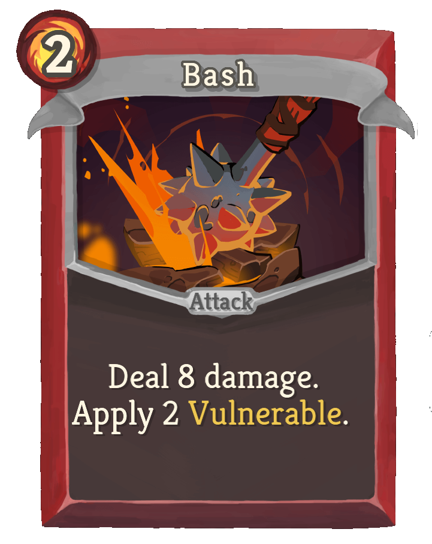
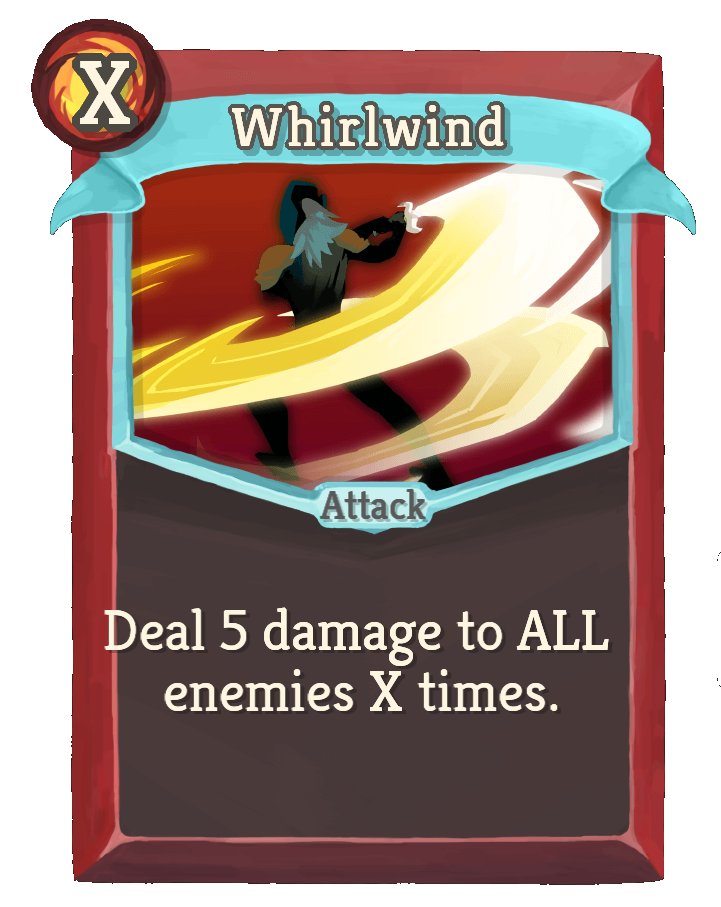
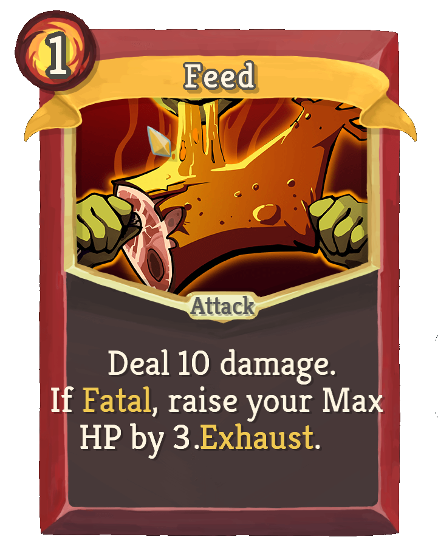
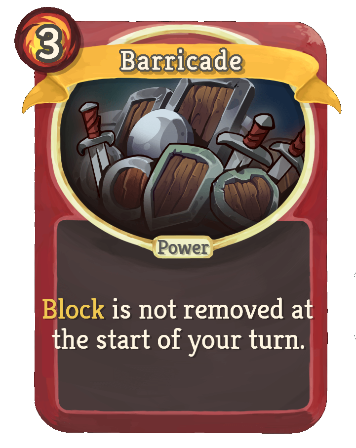

The Ironclad

Playstyles of the Ironclad
The Ironclad is a solid pick for both defensive and offensive capabilities. He has access to many cards that increase his strength, furthing his damage output as well as some heavy defense cards. His starting relic is Burning Blood. At the end of every combat he heals for 6 HP. If you are fortunate enough to upgrade Burning Blood to Black Blood, it becomes 12 HP. He is perfect for beginners to the game because of this.
Some of my favourite Silent cards
| Card | Type | Energy | Why I Like It |
|---|---|---|---|
 |
Attack | 2 | Makes enemies vulnerable |
 |
Attack | X | With energy and strength upgrades, this goes hard. |
 |
Attack | 1 | Requires some set up, but it's a permenent max HP buff |
 |
Power | 3 | It's constant buffing of strength can let your damage scale wildly. |
 |
Power | 3 | Never losing you're block between turns is great. You can become unkillable |